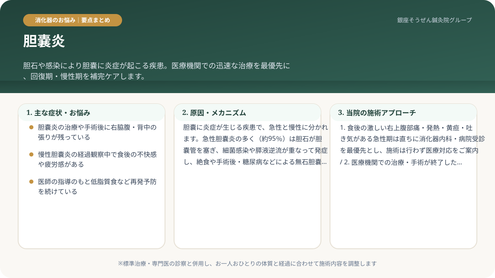

胆嚢炎の鍼灸
胆石や感染により胆嚢に炎症が起こる疾患。医療機関での迅速な治療を最優先に、回復期・慢性期を補完ケアします。
まず知っておきたい要点と改善の流れ

胆嚢に炎症が生じる疾患で、急性と慢性に分かれます。急性胆嚢炎の多く（約95％）は胆石が胆嚢管を塞ぎ、細菌感染や膵液逆流が重なって発症し、絶食や手術後・糖尿病などによる無石胆嚢炎もあります。放置すると壊疽や穿孔に至る危険があるため、速やかな入院・抗菌薬・手術などの医療処置が最優先です。急性発作を繰り返すと壁が肥厚・萎縮する慢性胆嚢炎へ移行します。
このようなお悩みはありませんか？
- ✓胆嚢炎の治療や手術後に右脇腹・背中の張りが残っている
- ✓慢性胆嚢炎の経過観察中で食後の不快感や疲労感がある
- ✓医師の指導のもと低脂質食など再発予防を続けている
- ✓治療後のストレスや自律神経の乱れを穏やかに整えたい
当院の施術アプローチ・改善の流れ
なぜ鍼灸で改善へ向かうのか？（作用機序の図解）
胆嚢炎に対する鍼灸は、脳腸相関と迷走神経反射による胃腸運動の調整機序を通じて、お体本来の回復力を引き出します。

胃腸機能と深く結びつく四肢・腹部の経穴を刺激し、体性感覚神経から中枢へ信号を送ります。
脳幹を経由した体性-内臓反射により、副交感神経（迷走神経）経由で胃腸の働きを調整します。
弱まったぜん動を促す一方、下痢型の過剰な収縮や内臓知覚過敏は穏やかに鎮静します。
ストレスで乱れにくい胃腸の土台を整え、胃もたれ・便通異常・吐き気の軽減を目指します。
院長YouTube解説・関連動画
胆嚢炎とは胆嚢に起こる炎症
胆嚢は、消化に必要になるまで胆汁を蓄めておくセイヨウナシ形の器官です。 胆嚢炎は胆嚢に起こる炎症をまとめた呼び方です。胆嚢炎は大きく分けて２種類あります。１つ目は急性胆嚢炎、もう１つは慢性胆嚢炎です。
急性胆嚢炎は炎症の度合いによって種類がいくつかあります。胆嚢が軽く炎症を起こしているカタル性胆嚢炎、膿がたまって胆嚢が腫れてくる症状のある化膿性胆嚢炎、炎症が重く胆嚢が部分的に死んでしまったり穴が開いたりする壊死性胆嚢炎、細菌による影響で胆嚢の内や外にガスが発生する症状のある気腫性胆嚢炎です。
慢性胆嚢炎の場合、胆嚢炎を繰り返し起こすうちに胆嚢の壁が厚くなり、硬くなり、萎縮します。すると、胆嚢の機能が低下してしまいます。その場合、症状は急性に比べて軽いことが多いです。
急性胆嚢炎は突然発生し、上腹部に長い期間続く激しい痛みが起きます。急性胆嚢炎を発症した人の中の95％には少なくても胆石がみられます。あとになってから感染が起こることもあります。
しかし、多くの場合は感染していない炎症で始まります。炎症が起こると、胆嚢に液体が充満し、胆嚢の壁が厚くなります。慢性胆嚢炎は、胆嚢の炎症が長い期間続く病気です。
慢性胆嚢炎が起きる原因のほとんどが、胆石か過去に発生した急性胆嚢炎です。慢性胆嚢炎の特徴は、胆石が胆嚢管を周期的にふさぐことによって起きる痛みの反復発作です。
慢性胆嚢炎では、急性の炎症が繰り返し起き胆嚢に傷ができ、胆嚢の壁が厚くなって、胆嚢が瘢痕化して小さくなります。胆嚢管に続く胆嚢の開口部や胆嚢管自体を胆石が塞いでしまうことが多いです。
普段は胆嚢には、胆泥がたまっています。瘢痕が広い範囲に渡る場合、カルシウムが胆嚢の壁に沈着して、胆嚢の壁を厚くしてしまうこともあります。
胆嚢炎の症状は食後の痛み
胆嚢炎の症状の特徴は、特に食後に起こる右側上部の肋骨辺りやみぞおちの数時間にわたる痛みです。痛みは炎症が強くなるに従ってひどくなります。例えば、右肩や背中に痛みが広がるなどの症状があります。
炎症が強くなると、そのうち大きく息を吸っただけで激痛を感じます。高熱や吐き気、嘔吐、食欲不振などの症状も合わせて起こします。また、目や顔が黄色くなる黄疸や肝機能障害を起こすこともあります。
胆嚢炎には、無石胆嚢炎と呼ばれる胆石がない急性胆嚢炎もあります。この場合、前触れとして初期症状などはみられず、腹部の上部に耐えられないほど痛い激痛が起きます。この場合、炎症はかなり重度であることが多く、堪能の組織が壊疽を起こしたり破裂したりすることもあります。
胆嚢炎の症状は、胆石を持っている人全ての人に起きるのではありません。胆石を持っている人の中の1部に症状が起きるのです。半分以上の人は胆石を持っていても症状がありません。
症状がある1部の人は、ご飯を食べたあとにみぞおちから右上の腹部に痛みが起きることが多いです。この痛みは、食事することによって起きる刺激が原因です。石が胆嚢の中で動いたり、細菌への感染を起こすことが原因で胆嚢炎を起こし、症状が現れます。
胆嚢炎では右上のお腹の痛みに合わせて熱が出ることもあります。症状が進むにつれて、全身の状態が悪化していくのです。このような状態になると入院して改善することが必要です。胆嚢炎という判断がされない場合も、何か症状がある人は改善が必要です。
胆嚢炎の原因の多くは胆石
胆嚢は肝臓の右下にある臓器のことです。胆嚢は、肝臓で作られた胆汁を一時的にためておき、水分を吸収して凝縮する働きがあります。胆嚢は、食事をすることが刺激になり、収縮します。
胆汁は主に脂肪の消化を助けるためという理由で胆嚢管を通過し十二指腸へ流れて行きます。急性胆嚢炎の多くの原因は胆石です。胆嚢管は胆汁の通り道です。胆嚢炎はその胆嚢管に胆石が詰まることが原因で起こります。しかし、ただ単純に胆石が詰まったということだけが原因で炎症が起きることはあまりありません。胆石が詰まった状態でさらに細菌に感染したり、膵液が胆のうに逆流したりすることで炎症が起きるのです。
他にも胆嚢炎にはいろいろな原因があります。胆嚢炎は、約２〜15％の割合で胆石以外の原因があることがあります。胆石が原因でない場合の胆嚢炎の原因は、手術や重症外傷、熱傷、点滴による栄養摂取、がんの転移などです。
他にある胆嚢炎の原因は、胆のうの奇形や胆のうが回転して入り口部分がねじれてること、胆のうの血行障害、周囲の臓器の炎症や腫瘍による胆嚢管の狭まり、寄生虫、膠原病、アレルギー反応などです。
胆嚢炎の原因となる菌は主に大腸菌やクレブシエラなどのグラム陰性桿菌です。しかし、最近では、バクテロイデスなどの嫌気性菌やエンテロコックスなどグラム陽性菌も増加しています。
胆石が無くても胆嚢炎が起きることも時々あります。無石胆嚢炎と言われており、原因は長い期間に渡る絶食や胆管閉塞、糖尿病、動脈硬化症、膠原病、肝動脈塞栓術後の胆嚢虚血などと言われています。
炎症の重さの程度で、カタル性、化膿性、壊疽性に分けられます。死んでしまった粘膜が剥がれ落ちる壊疽性胆嚢炎になった場合、胆嚢壁の穿孔や胆汁の漏出がおきます。
胆嚢炎は胆嚢炎の処置結果と症状を合わせて急性胆嚢炎と判断されます。結果と症状で判断できる症状の度合いに合わせて改善を行います。初期のための改善方法の後に胆のう摘出術が行われます。
その後、緊急手術や緊急ドレナージ術が行われることもあります。初期のための改善方法は、絶食と輸液、抗菌薬や鎮痛剤の投与などの方法があります。急性胆嚢炎に対する胆嚢の摘出術は、症状が起こった後、なるべく早い時期に手術を行うことがお勧めです。
重症度や合併して起こす病気などのために症状が軽くなってから、手術を行うこともあります。その際に行われる手術は腹腔鏡下手術または開腹手術による胆嚢摘出術です。
胆嚢を摘出したとしても、新しく胆嚢の発作が起きている痛みが起きたり、痛みが繰り返し起きたりすることがあります。このような痛みがある状態を胆嚢摘出後症候群とも呼びます。胆嚢摘出手術後症候群の原因は不明です。
しかし、最近では、総胆管や膵管と小腸との間にある輪状の筋肉の機能が正常に働いていないことが原因ではないかと考えられています。この筋肉に機能不全があると、総胆管からの胆汁の流れや膵管からの分泌物の流れが遅くなります。両方の管の圧力が上昇して痛みが起きることもあります。
胆嚢を摘出する手術の後に管内に残った小さな胆石が痛みの原因になることもあります。過敏性腸症候群や消化性潰瘍などの胆嚢とは関係のない病気によって痛みを起こすことも多いです。
急性胆嚢炎の多くは胆石症がきっかけで発症します。そのため、胆石の発生を防ぐことが１番の予防につながります。胆石ができる原因はコレステロールなど脂肪分の多い食事です。
日頃からバランスの取れた食生活を心がけることが大切です。改善のための手術などを行った後、たまに術後の出血やおなかの中の胆汁が漏れなどの合併症が起こることがあります。そのため、追加手術の可能性が全くないわけではないということに注意しておいてください。
胆嚢を取り除いても日常生活に影響はないと言われています。急性胆嚢炎の場合、自然に回復することもありますが、原因の多くが細菌への感染のため、長時間の痛みや最初の可能性も高く考えられます。回復するからといって放っておかず消化器内科に相談し、しっかりと改善することがお勧めです。
ツボの位置と押し方
京門は、わき腹に触れる肋骨の最も下辺にあるツボです。探すときは、横向きに寝て上になった側の手を上げ、下肋部を触り、腰の脇側の最も下の肋骨の先のへこみを探しましょう。
押すと痛みがあることが多いため、痛みがある場所が見つかったらツボであると考えると良いでしょう。押すときは、親指もしくは中指で優しく押します。
梁丘は、太ももの前面にあるツボで膝蓋骨の外縁から指３本上に上にがったところにあります。
押すときは椅子に座ると押しやすいです。両手で包み込むようにして押しましょう。
陽陵泉は、膝下の外側にある骨の飛び出ている部分の下のくぼみにあります。
押すときは、足を曲げた状態押すと良いです。押すときの力加減としては、軽い力がお勧めです。
胃腸・逆流性食道炎・機能性ディスペプシアのツボ図解
実際の施術ではお一人おひとりの体質・症状に合わせて選穴しますが、胃食道逆流症（GERD）・機能性ディスペプシア・胃痛・吐き気ケアの臨床でよく用いられる代表的なツボの目安です。

📌 代表的なツボの詳細一覧表を開く（6穴） ▼
| ツボ名 | 位置の目安 | 主な狙い | セルフケアの注意点 |
|---|---|---|---|
| 巨闕（こけつ） | みぞおちの骨のすぐ下 | 胸やけ・みぞおちのつかえ感・横隔膜の緊張緩和 | 食後すぐの強い圧迫は逆流を招くため避けます。 |
| 中脘（ちゅうかん） | みぞおちとおへその真ん中 | 胃もたれ・早期膨満感・胃排出能サポート | 温めながらゆっくり腹式呼吸を行うと緩みます。 |
| 天枢（てんすう） | おへその左右それぞれ指3本分外側 | 消化管全体の蠕動バランス・お腹の張り軽減 | お腹が冷えやすい方は温灸がおすすめです。 |
| 内関（ないかん） | 手首の横ジワから指3本分肘寄りの中央 | 吐き気・胃酸逆流に伴う不快感・下部食道括約筋の調整 | 胃カメラ等の検査前後のセルフケアにも有用です。 |
| 足三里（あしさんり） | 膝の下外側、指4本分下 | 迷走神経を介した胃腸運動調整の最重要穴 | 毎日続けやすい胃腸の養生穴です。 |
| 公孫（こうそん） | 土踏まずの縁、親指の付け根からかかと寄り | 胃痛・胃もたれ・自律神経性の胃腸不調ケア | 内関と組み合わせて優しく押します。 |
国際査読論文の科学的エビデンス
国際的な医学データベース（PubMed・Cochrane等）で報告されている胃食道逆流症（GERD）・機能性ディスペプシア・胃痛・吐き気ケア領域の代表的な査読済み鍼灸研究をまとめています（標準治療との併用や研究上の限界を含めて正確に掲載）。
📚 査読論文データ・PubMed出典リンクを開く（4件） ▼
| 年・研究デザイン | 対象・規模 | 主な結果 | 限界・出典 |
|---|---|---|---|
| 2016年 大規模多施設RCT | 慢性重症機能性便秘 1,075名（15病院） | 週平均完全自発排便回数が電鍼+1.76 vs シャム+0.87（P<0.001）、20週追跡時も持続（P<0.001）。 | 20週以降の長期経過は未評価。 Ann Intern Med (PMID: 27618593) |
| 2020年 多施設RCT | 機能性ディスペプシア（PDS）278名（5施設） | 4週時点の総合改善反応率83.0% vs シャム51.6%（P<0.001）、終了後12週間維持。 | 16週脱落率18%・施術者盲検化不可。 Ann Intern Med (PMID: 32422066) |
| 2025年 多施設RCT | 下痢型過敏性腸症候群（IBS-D）280名（6病院） | 6週時点の複合反応率57.9% vs シャム41.4%（RR 1.40, P=0.008）、重篤な有害事象なし。 | IBS-D限定・中国多施設試験。 Gastroenterology (PMID: 40441496) |
| 2017年 メタ解析 | 胃食道逆流症（GERD）12 RCTs（n=1,235） | 鍼＋西洋薬併用は西洋薬単独より総合改善優位（RR 1.17, p=0.03）、再発率低下（RR 0.42, p<0.001）。 | 組入れ試験の質が低く標準治療との併用が前提。 Acupunct Med (PMID: 28689187) |
参考文献・出典
- 2016年 大規模多施設RCT（慢性重症機能性便秘 1,075名（15病院））— Ann Intern Med (PMID: 27618593)
- 2020年 多施設RCT（機能性ディスペプシア（PDS）278名（5施設））— Ann Intern Med (PMID: 32422066)
- 2025年 多施設RCT（下痢型過敏性腸症候群（IBS-D）280名（6病院））— Gastroenterology (PMID: 40441496)
- 2017年 メタ解析（胃食道逆流症（GERD）12 RCTs（n=1,235））— Acupunct Med (PMID: 28689187)
よくある質問（FAQ）
Q. 右上腹部が強く痛み、熱も出ています。鍼灸を受けられますか？▼
Q. 胆嚢摘出手術のあとに残る張りや疲れの相談はできますか？▼
あわせて読まれる関連疾患（消化器のお悩み）
椎体・肛門・気管食道・橈骨・腎の複数徴候を合併する先天性疾患。専門医管理下で筋緊張や疲労を補完します。
キノホルムによる薬害で生じた神経障害（新規発症なし）。専門医管理下で慢性期のしびれや筋緊張を補完ケアします。
飲酒が主因でない脂肪肝に炎症・線維化が加わった状態。食事と運動での減量を軸に、倦怠感や生活リズムの乱れを鍼灸で支えます。
長期の過剰飲酒で脂肪肝から肝炎・肝硬変へ進む肝障害。専門医管理と禁酒を基本に疲労や自律神経を整えます。
胃の一部が横隔膜の食道裂孔から上方へ飛び出す状態。医療機関での管理と並行し背部緊張や自律神経を整えます。
ガストリノーマによる胃酸過剰で難治性潰瘍を起こす疾患。専門医の治療を第一に、体調・自律神経を補完します。
CLINICAL RECOVERY CASES
✨ 実際の臨床改善事例・回復経過を見る
銀座本院をはじめ各院での実際の改善事例を症状別に絞り込んでご確認いただけます。
おひとりで悩まず、まずはご相談ください
銀座本院・川口・大宮・横浜・博多・田無の各院でご予約を承っております。